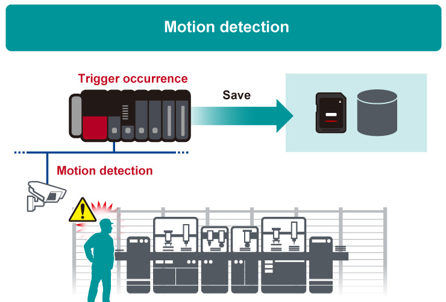
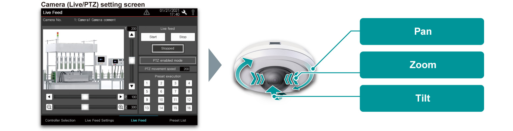

Controllers MELSEC iQ-R Series Product features -System Recorder-

System-wide recording


System-wide recording - Control data
Device/label collection every (programmable controller) scan
- ❶Collecting of all device and label data
- The MELSEC iQ-R Series recorder module and camera recorder module can automatically collect all device and label data per programmable controller scan prior to and after an error event (together with a time-stamp)
- Complete collection of data necessary for analysis ensures simpler error analysis, reducing the recovery time of the control system
- Safety device and label collection are also supported
- ❷Easy setting
- The recorder module and camera recorder module can be set within the intuitive engineering software GX Works3
- Target device and labels to be recorded are automatically set by checking the box
- Influence on the CPU scan time can be checked

- ❸Minimal impact on the scan time
- The modules are designed to separate load from the CPU module, minimizing impact to control
- Influence on the CPU scan time is further minimized by filtering of devices and labels
- Collecting targets can be quickly set by narrowing down with filter conditions

Recording method according to applications
Recording of data prior to and after an error event
- Two saving period settings are available with the MELSEC iQ-R Series recorder module/camera recorder module. In addition to recording of data prior to and after the event, data can be recorded starting from the beginning of the equipment cycle

- The total of the saving periods before and after trigger can be set within a range from 1 to 86400 seconds
- When the recording buffer capacity is exceeded, the old data is overwritten
- If recording startup trigger and such are set, data is saved without a file saving trigger
- The previous recording buffer is overwritten per recording startup trigger
- If the data exceeds the recording buffer capacity in a single recording, old data is prioritized and the data exceeding the capacity is discarded
Extensive recording trigger settings
- The recorder module/camera recorder module are available with extensive triggers for recording which can be used according to requirements
- Setting triggers enables non-alarm stop detection and motion detection, errors previously undetectable can now be detected
- Active signals are monitored periodically to detect a signal which remains unchanged for a certain period as timeout
- Used to detect a machine that stops without alarm

- Monitor equipment and operators with network cameras to trigger when motions are detected
- Motion detection is supported by the camera recorder module only.
- For details of compatible camera, please refer to the technical bulletin. (FA-A-0326)
Automatic saving to file server
- As a recording file storage, an SD memory card for the system recorder modules or a file server (such as a NAS or computer) can be selected
- A file server (such as a NAS or computer) can be used as storage for a large capacity data. Remote retrieval of collected data directly from the file server is supported without requiring access on the shop floor
Record video feeds at the moment an error occurs with network cameras
- By supporting available network cameras, the camera recorder module offers a wide choice of functions, specific to an application and installation environment
- Network cameras (such as image resolution, frame rate) can be set within GX Works3 without requiring individual setup

| Installation environment | Applicable cameras |
|---|---|
|
Wide angle/fish-eye lens type |
|
Optical zoom type PTZ (Pan-Tilt-Zoom) type |
|
Modular type Wireless type |
System-wide recording - Video data
Optimized focusing on camera subject
- Live image streaming of the network camera on the GOT (HMI) and MELIPC MI3000 and also PTZ (Pan-Tilt-Zoom) control are possible
- Machine movement can be checked from the GOT (HMI) and MELIPC MI3000
- Fine adjustments are supported while monitoring the live video feed on the shop floor

Support high resolution and long-duration recording
- The system recorder stores high-definition video feeds for a long time using the H.264 codec which compresses the data, making space utilization more efficient
- Since it uses a general-purpose video format, there is no need to move or process the storage location of the video file. In addition, recorded video feeds can be checked instantly by a general video replay software as well as dedicated GX VideoViewer and GX VideoViewer Pro
Collecting all servo axis data in real-time
- ❶Recording of positional data from servo
- Servo systems tend to operate at a much faster cycle time compared with a programmable controller making it difficult to capture. Control data of the motion CPU module and motion module can be recorded with a time-stamp
- Detailed positional data from the servo can be recorded
- ❷Automatic collection without requiring a program
- Simple parameter settings enable the data collection without programming
- Speed/torque/positional data of the MELSERVO-J5/MELSERVO-J4 Series servo amplifier connected with the MELSEC iQ-R Series motion module/motion CPU module are automatically collected as logging data when an error occurs
- Data with a time-stamp is saved in the SD memory card of the motion module/motion CPU module
Co-recording function enables easier error cause identification by recording entire system data within compatible modules*1NEW
- When any of the compatible modules*1 detects an error, all data recorded in the system is saved at the same time
- By comparing the control data for each module and video feeds when an error occurs, the error cause within multiple devices can be easily analyzed
Example of a packaging machine

Error cause identification via network across entire system by co-recording compatible modules*1NEW
- Errors detected by any of compatible modules*1 are notified to other stations via CC-Link IE TSN
- Even in a large-scale production line with multiple equipment/processes, error factors across programmable controllers can be easily analyzed by aligning a specific timeline
- *1.The recorder module, camera recorder module, motion CPU module, and motion module are supported.
System-wide recording - Event history
Record event history
- Operation from engineering software and device/label operation from external devices can be recorded as historical events
- By analyzing event history with records of device/label changes when an error occurs, an error due to data write from an external device or a mistake with operator's procedure can be checked
| Recorded items |
|---|
| Operation from engineering software |
| Device and label data registration via SLMP*2 Ethernet protocol |
| Device and label data registration using instructions (from other stations or machines) |
| Device and label registration using “Simple CPU communications” (from external device) |
- *2.SLMP: Seamless Message Protocol
Record operation log and alarm history
- ❶Easier to identify error cause from operation log
- Operation logs can be recorded as operation log in an SD memory card or USB memory and can be confirmed in the GOT (HMI) or MELIPC MI3000 on the shop floor
- Data such as operation logs and alarm history can be checked on a computer in time-series
- In addition to operator authentication, recording of specific operator logs can be identified easily

- ❷Recording of system alarm history
System errors that have occurred are logged in the GOT (HMI) situated on the shop floor. Alarms related to each device with detailed logs showing specific network station number are supported. These features are ideal for large-scale systems.